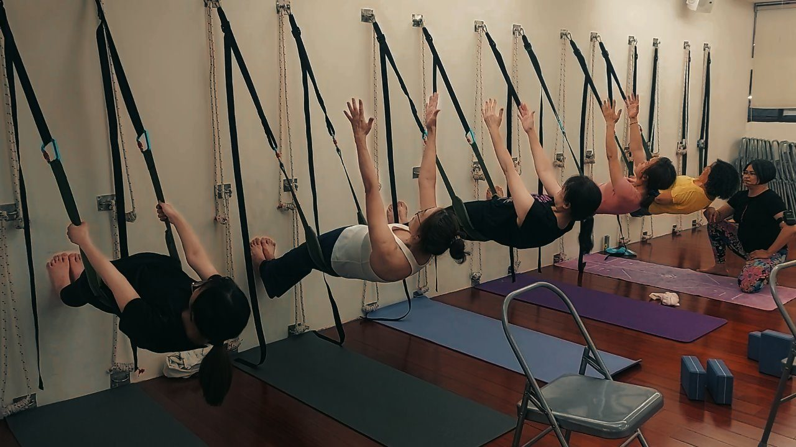
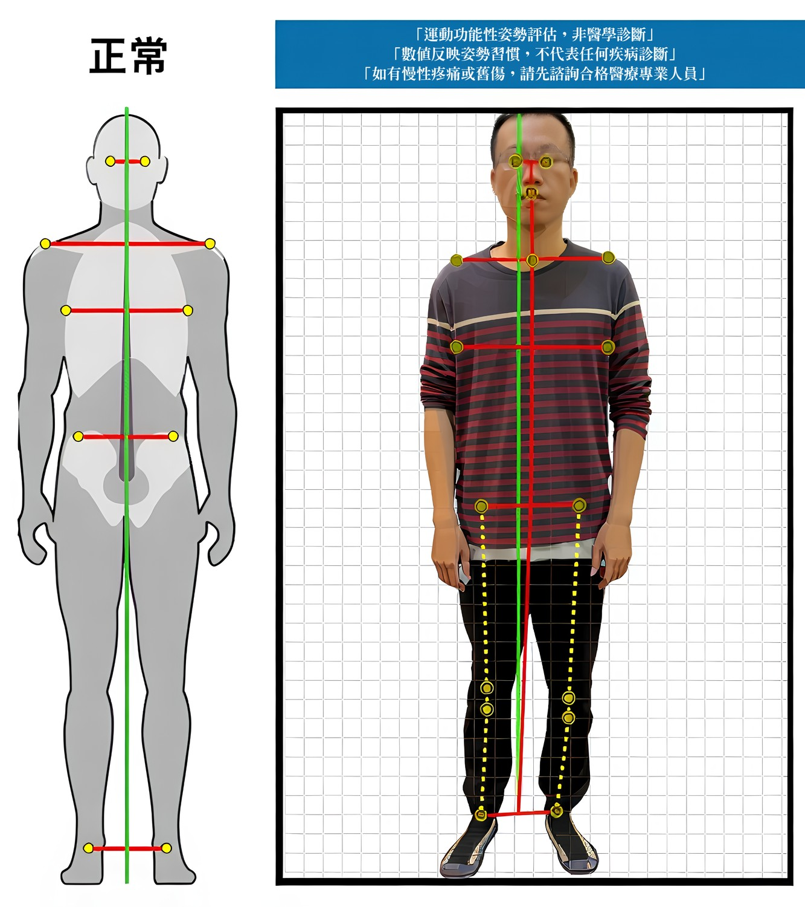
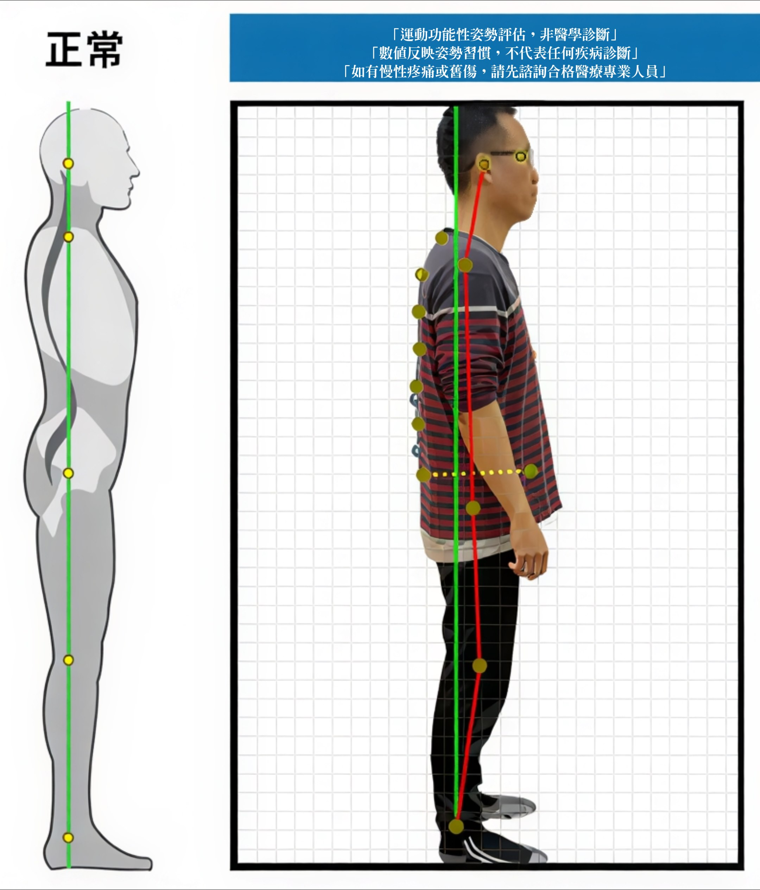
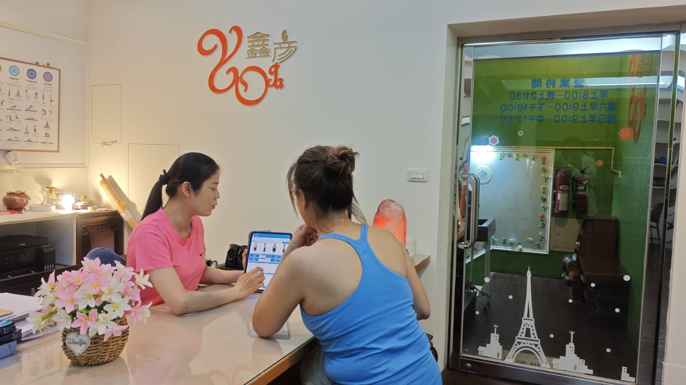
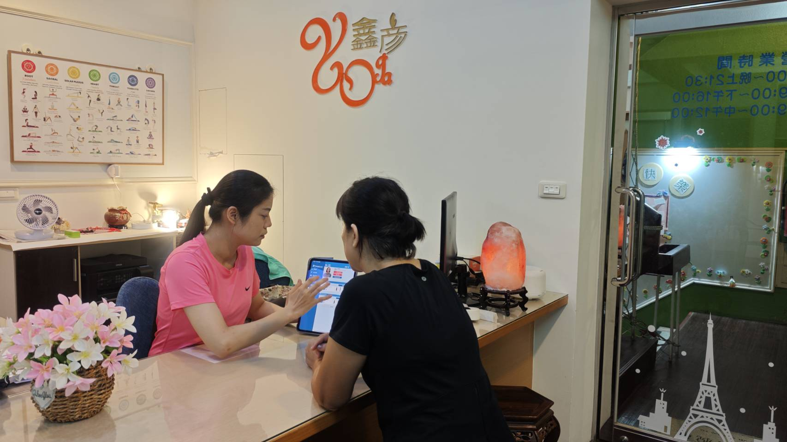
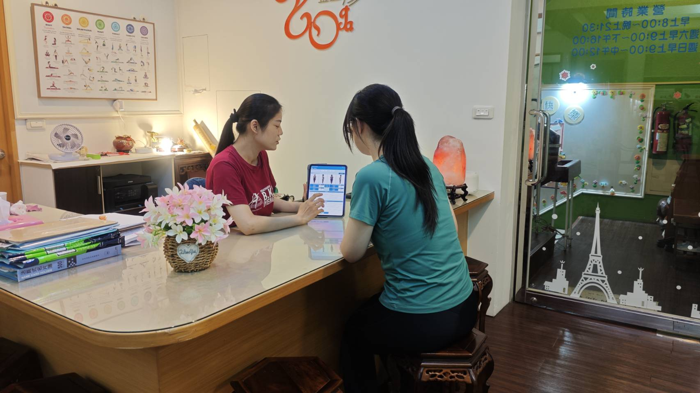

透過現場拍攝與 AI 姿勢分析，看見肩線、頭部前傾、脊椎與骨盆角度，再由老師當面解讀，把「感覺怪怪的」變成較清楚的觀察方向。
原價 NT$699 · 首次到店 NT$199 · 事先透過 LINE 預約 · 每人限一次
⭐ Google 4.9★ · 79 則真實好評 · 高雄左營在地教學 10 年+
高雄左營 AI 體態檢測，適合想先看懂自己身體狀態，再決定怎麼練的人。
你來到教室後，老師會使用 AI 姿勢分析協助拍攝，呈現肩線、頭部前傾、脊椎與骨盆等姿勢角度。接著由老師當場為你解讀，協助你理解目前的體態觀察與可以優先留意的地方——不是機器給一個分數就結束。


實際檢測報告範例 · 運動功能性姿勢評估，非醫學診斷。
你看到的不只是數值。現場會由老師協助說明姿勢畫面、身體觀察，以及後續可以先留意的方向。



從報告中查看肩線、頭部、脊椎與骨盆等姿勢角度。
由老師協助閱讀畫面，不需要自己猜測數字代表什麼。
依當天檢測結果，討論目前可以先留意的身體使用方式。
★★★★★今天體驗 AI 檢測與調整，身體狀況沒有想像中的好，經過老師的調整，覺得肩頸放鬆了，腰部感覺比較鬆了，很棒的一次體驗。
— 黃之柔 · Google 評論
★★★★★用姿勢檢測來評估身體結構，讓我們進入課程後能以更標準的動作來學習，避免運動傷害產生，是很好的瑜珈運動館。
— 徐芳芳 · Google 評論
檢測的重點不是逼你立刻買課，而是先讓你知道：目前身體比較需要留意的是肩頸、胸椎、骨盆，還是日常用力方式。
如果你想繼續調整，老師會依照當天觀察，建議比較適合你的壁繩瑜伽、小班課或一對一方向；如果你只想先了解自己的狀態，也可以只完成這次檢測。
AI 體態檢測（現場拍攝、姿勢角度分析、老師當面解讀）
原價 NT$699首次到店優惠
首次體態了解方案
NT$199
是的。檢測在高雄左營教室進行，老師會在現場協助拍攝、查看姿勢角度並當面解讀。
包含一次 AI 體態檢測的現場拍攝、姿勢角度分析，以及老師當面解讀。原價 NT$699，首次到店優惠 NT$199。此評估不是醫學診斷。
限第一次到鑫彥瑜珈體驗 AI 體態檢測的訪客，每人限一次。請事先透過 LINE 預約，並以 LINE 回覆確認的時段為準。
現場檢測與老師解讀約 20 分鐘，實際時間會依當天狀況略有不同。
不用。老師完成解讀後，是否進一步安排課程由你決定，沒有推銷壓力。
可以。檢測是為了先了解目前的體態，不需要先具備瑜伽基礎。
預約前先判斷
這 6 篇判斷文會把「上課、按摩、先檢測、先觀察」分清楚，讓你在預約前更知道自己想問什麼。
加入 LINE 安排到店時段。約 20 分鐘，包含現場拍攝、姿勢角度分析與老師當面解讀；原價 NT$699，首次到店優惠 NT$199。
預約首次 NT$199 AI 體態檢測 高雄市左營區新庄仔路 726 號 3 樓